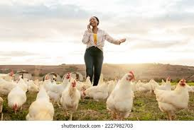

About me
I am a motivated and ambitious person, whose love for growth and business has made me to
save up capital from my available resources in order to start-up a poultry business.
My self-quote is: "start now and grow with precepts", this motto has helped to be determined and to
appreciate my little beginning and my progress thus far.

Our history so far...
I started this business with my beloved wife as my support since the last quarter of 2024 towards the christmas and new year festive seasons.
The birds were broilers and it has been a full package of experience rearing these birds. These experiences includes:
- waking up very early to care for the birds by feeding and warming up the cage for them
- checking them later in the day like mid noon inorder to see if they are okay or need their water changed or added.
- giving them adequate doses of their required drugs regularly
and many more experiences
With a few mortality rate, We successfully sold the birds as per demand during christmas and new year celebration,
we removed our capital from the net income and use the money to restock the cage with layers this time.
The birds are doing fine with no deaths at all, they are 20weeks already.
We so much love this business and have this firm determination to continue rearing birds everytime, every year

About our products
We Specialise in rearing and selling of birds, selling of eggs and really hope to expand and deal with selling of feeds,
and other poultry-related materials